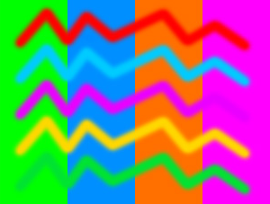

Introduction
TexSyn is an idiosyncratic library for procedural
texture synthesis. It is not intended for use “by human hands.” TexSyn
programs will be automatically generated with a Genetic Programming
system. This is a blog (or a lab notebook? a design diary?) about making
TexSyn. It is not proper documentation, although might be some sort of a
starting point. Mostly this describes in “blog order” the steps and design
decisions made in its construction. There is some background and
introductory information, at the bottom of this page, in the entry for December
15, 2019.
May 2,
2020
Interpolate and blur colors in RGB space with linear gamma.
Or: “I finally know how to fix that bug from 1982.”
While working on the Gamma texture operator (April
26) I was reading background material on the topic of gamma
correction. It comes up a lot in computer graphics and digital image
processing. In the back of my mind I knew gamma was important for
correct and efficient image representation, and as a tool for adjusting
the tone/contrast of an image. But it is also key to getting image
blending and anti-aliasing to work correctly. I was looking at John
Novak's 2016 “What Every Coder Should Know About Gamma” and was struck
by the section on “colour
blending” — particularly Figure 8:


I recreated a bit of it in the first texture below. There are red and
magenta spots composited with SoftMatte onto a green
background. The two spots have an obviously incorrect dark ring
around them. I had been seeing—and willfully ignoring—this artifact in
TexSyn. But seeing this test, my mind went back to my early days at SGD,
the graphics “division” of Symbolics Inc. Around 1982 my first big
project was an interactive “paint” system for graphics and illustration.
I noticed these annoying dark boundaries when certain color pairs were
blended together. I had several theories for what caused the problem but
none of them was gamma. Novak's Figure 8 grabbed my
attention because it clearly showed the problem, and showed how it
should look when the problem is solved.
The Spot texture generator uses a sinusoidal transition from
the outside color (at 0) to the inside color (at 1). That blend factor
“alpha” is then used for a simple linear interpolation between the
colors. But “linear interpolation” assumes a linear space. Color values
as displayed on the screen assume a gamma of about 2.2. (Of course it is
more complicated, the color space definition is: sRGB.)
In order to perform linear interpolation of color values requires the
RGB components be “de-gamma-ed” into linear space before interpolation,
and “re-gamma-ed” afterward. TexSyn's interpolate()
function had been a simple C++ template compatible with all types. Now
there is a special case for interpolation of Color values.
Here is the original failing case and the improved version which
performs color interpolation in linear (gamma=1) space.


red = Uniform(Color(1, 0, 0))
green = Uniform(Color(0, 1, 0))
magenta = Uniform(Color(1, 0, 1))
spot = Spot(Vec2(), 0.1, Color(1, 1, 1), 0.5, Color(0, 0, 0));
two_spots = SoftMatte(Translate(Vec2(0.5, 0), spot)
SoftMatte(Translate(Vec2(-0.5, 0), spot), green, red),
magenta)
This is the second texture above with inner and outer radii for the two
Spots drawn in to help visualize where the color gradients
fall:

The SoftMatte operator defines a texture that (for any given
location) uses the luminance of it first texture parameter (called
“matte”, here one of the two Spots) to control the blend of
the other two input textures. It now performs a “de-gamma” on the
“matte” texture so that all three values involved in the interpolation
are in linear gamma RGB space.
Taken together, these changes (to interpolate() for Color
and the SoftMatte texture operator) handle most of the
blending gamma errors in the current library. Most operators rely on the
same interpolate() function. For example, here is a LotsOfSpots
before and after this change, for the problematic red and green color
combination:
LotsOfSpots(0.9, 0.02, 0.5, 0.1, Color(1, 0, 0), Color(0, 1, 0))


Another place where color computation require correct handling of gamma
is in the Blur low pass filter. (The EdgeDetect and
EdgeEnhance operators (see March 1)
are based on Blur and so inherit its functionality.) Shown
below is a test pattern grating, and two applications of Blur,
before and after this gamma change. As in the case of SoftMatte
and interpolate(), the change is basically to “de-gamma”
the color values before the convolution calculation, then to “re-gamma”
the resulting filtered value. (The Novak page cited above also links to
this page, by the late Ellie Stone, which has good example images of
blending and blurring: Linear
Gamma vs Higher Gamma RGB Color Spaces: Gaussian Blur and Normal Blend
Mode.)
grating = Grating(Vec2(), Color(1, 1, 0), Vec2(0.2, 0), Color(0, 0, 1), 0.01);
Blur(0.1, grating)


In the examples above, grating has 10 pairs
of yellow-blue stripes, so 20 individual stripes across its rendered
diameter of 2 units. Each (say) yellow stripe has a width of 0.1. We
then apply Blur to it with a kernel width of 0.1. So the
circular “support” of the filter kernel of a pixel centered on a yellow
stripe will all be yellow. It follows that a pixel centered on a (say)
yellow stripe should have a color identical to the corresponding place
on the original grating texture. (Conversely a pixel on
the boundary between yellow and blue will result in a blend of half
yellow and half blue.) This comparison can be seen in the image below. A
horizontal slice through the three textures above are juxtaposed so they
can be more carefully compared. Following the center line of a yellow
stripe, it appears to be the same color in all three, as intended.
Similarly for blue. What differs is the luminance of the blurred
transition between yellow and blue. With the old code (stripe 2 of 3
below) the transitions are too dark. (This recalls the dark rings around
the red and magenta spots in the first example above.) With the new code
(stripe 3 of 3 below) the transitions are brighter and seem to better
represent a transition from yellow to blue. Note that interpolating
between complementary color pairs (like yellow↔︎blue, magenta↔︎green, or
cyan↔︎red) requires traversing a main diagonal of the RGB color cube
between opposite corners. This causes the center of the interpolation
path to pass through the monochrome axis, the fourth main cube diagonal
between black and white. We see these grayish midrange colors here
between yellow and blue stripes, and in the first example above, between
a magenta spot and the green background.

April 26,
2020
Gamma
Gamma provides the standard
operation used in digital image processing: exponentiating the RGB
components by a given parameter gamma (γ). Values other than 1
cause a nonlinear contrast mapping. When gamma is less than 1, mid-range
colors will be brighter. When gamma is greater than 1, mid-range colors
will be darker. Values near white (luma ~1) and near black (luma ~0)
stay about the same.
Note that Gamma and AdjustBrightness (see March
4) are similar. Both have one float parameter and change a
texture's contrast. AdjustBrightness performs a linear scale
of a texture's brightness, so changes its contrast. Gamma makes a
nonlinear contrast change. Normally gamma correction is used on color
values within the positive unit RGB cube. In TexSyn colors are three
arbitrary floats.
Shown below are five applications of Gamma to the same ColorNoise
texture cn. The parameters are 0.5, 0.66,
1, 1.5, 2. I tested
that as intended, Gamma(1, cn) is identical to cn.
cn = ColorNoise(0.3, Vec2(5, 3), 0.6)
Gamma(0.5, cn)
")
Gamma(0.66, cn)
")
Gamma(1, cn)
")
Gamma(1.5, cn)
")
Gamma(2, cn)
")
April 21,
2020
Even speedier LotsOfSpots
In the previous post, I clocked recent acceleration due to algorithmic
and parallelism as producing a speed-up of 17x. I tried one more time
today and got it to 22 times faster than the April 7
version, as measured on the same test suite of six textures shown in the
previous post.
Part of this was due to what I think of as Amdahl's
law, or at least the underlying principle. On an ideally parallel
workload, execution time is inversely proportional to the number of
parallel processors applied to the task. But normally there is some
overhead that cannot be made parallel. That places a ceiling on the
speed-up. (E.G. if 5% of the task cannot be made parallel, it will never
run more that 20 times faster regardless of the number of processors
applied to the task.) In concrete terms, the function LotsOfSpotsBase::adjustOverlappingSpots()
was originally an O(n²) algorithm. Then using the DiskOccupancyGrid
spatial data structure reduced that to O(n). Then I
parallelized the part for deciding if each disk overlapped another, and
if so, computing the required move. Finally today I parallelized the
other part: erasing each disk from the grid, moving it, and reinserting
it into the grid. This required making DiskOccupancyGrid
thread-safe.
I also looked at the number of threads used. In rendering I use a
thread per scanline (row of pixels), so the renderings on this page use
about 500 threads. In my prototype “disk de-overlapping” code I had
arbitrarily selected 40 threads. I tested other values. It kept getting
faster as I reduced the number of threads, until it hit a minimum at 8
threads, then got slower as I used fewer threads. Coincidentally, there
are 8 hardware “hyperthreads” on the 4 cores of my laptop's CPU. I don't
know if if this is purely coincidental, but in case not, my thread count
is now set to the value returned by std::thread::hardware_concurrency().
April 19,
2020
Speed ups for LotsOfSpots and friends
As mentioned on April 6 the compute speed for
the base class for LotsOfSpots, etc. was much too slow. The
algorithm to ensure the “spots” did not overlap was O(n²) with
typical n being in the thousands (4264 spots in the first two
example below). I made two main changes. First to use a spatial data
structure to allow quickly finding “spots” near a given point in texture
space (for rendering) and near another spot to determine if they
overlap. The second change was to use multi-thread parallelism during
the overlap removal. Averaged over multiple runs, using the test suite
below (6 textures), the code now runs about 17 times faster.
The images below show a sample LotsOfSpots, and then the same
texture “zoomed out” (scaled down by 0.13) to show the entire tiling
pattern.
To help compare these pair of images: the tiles are 10x10 texture space
units, meaning they are 5 times wider than the circular renderings whose
diameters are 2 units. The “close up” image corresponds to the very
center region of the zoomed out image next to it. You can see the scale
of the tiling pattern if you look closely at the zoomed out image. For
example, look at the second image: on the right hand side just below
center there is a “bare patch” with more magenta background and less
cyan spots. If you look to the left, about two third of the way across,
you can see the same bare patch repeated (see second image on April
3 which highlights the central tile).
LotsOfSpots(0.7, 0.02, 0.2, 0.01, c, m)
Scale(0.13, LotsOfSpots(0.7, 0.02, 0.2, 0.01, c, m))
")
)")
LotsOfSpots(0.8, 0.02, 0.4, 0.02, c, m)
Scale(0.13, LotsOfSpots(0.8, 0.02, 0.4, 0.02, c, m))
")
)")
LotsOfSpots(0.8, 0.2, 0.2, 0.02, c, m)
Scale(0.13, LotsOfSpots(0.8, 0.2, 0.2, 0.02, c, m))
")
)")
April 7,
2020
Even more LotsOfButtons
I had not tested LotsOfButtons with a non-zero button_center
parameter. Sure enough, it did not work correctly. I made a new test
case to use while fixing it. Here is contrived button_texture
called “sixths” whose edges cross at Vec2(0.5, 0.5):

Here is a LotsOfButtons using that sixths as
its button_texture, and a button_center of Vec2(0.5,
0.5). Now, after the bug fix, the six-fold input pattern is
correctly positioned inside each spot:
LotsOfButtons(0.8, 0.04, 0.4, 0.02, Vec2(0.5, 0.5), sixths, 0, Color(0.3, 0.3, 0.3))

The spiral pattern in yesterday's tests largely masked the issue of
orientation. This highly directional texture makes it much more obvious
that all the “buttons” are in the same orientation. I'm sure there are
occasions when that could be helpful. Yet it feels oddly regular and
mechanical next to the randomized positions and sizes of the spots. So I
added code to randomly rotate each “button” as shown below. I added (yet
another!) parameter to select between random-rotate or not. Like the which
parameter to MultiNoise (see January 12)
it is given as a floating point value—which is interpreted as a Boolean
value via thresholding: (button_random_rotate > 0.5)—allowing
it to be changed by mutation in the course of a Genetic Programming run.
The operational principle being: “let evolution decide”!
LotsOfButtons(0.8, 0.04, 0.4, 0.02, Vec2(0.5, 0.5), sixths, 1, Color(0.3, 0.3, 0.3))

p1 = Vec2(-0.01, 0);
p2 = Vec2(+0.01, 0);
a3 = 2 * pi / 3;
sixths = Translate(Vec2(0.5, 0.5),
Add(Gradation(p1.rotate(a3 * 2), Color(0.1, 0.1, 0.3),
p2.rotate(a3 * 2), Color(0.3, 0.3, 0.3)),
Add(Gradation(p1.rotate(a3), Color(0.1, 0.3, 0.1),
p2.rotate(a3), Color(0.3, 0.3, 0.3)),
Gradation(p1, Color(0.3, 0.1, 0.1),
p2, Color(0.3, 0.3, 0.3)))))
April
6, 2020
LotsOfButtons
LotsOfButtons is another variation on LotsOfSpots
where the spots are filled with a circular portion of another texture.
(I am still considering the use of “button” to mean a little portion of
one texture inserted into another. Possible alternatives: thumbnail,
icon, crop, stamp (as in rubber-stamp, pretty archaic), cameo,
cookie...)
Shown below are two examples of parameters to LotsOfButtons,
and the texture used to fill the individual spots. The parameters to LotsOfButtons
is similar to ColoredSpots with the addition of a Vec2
position indicating the center of the input texture used for filling the
individual spots. I am undecided on whether it makes more sense for the
input button_texture should be scaled according to the
radius of a spot.
The fourth parameter to the LotsOf... operators—the soft_edge_width—had
been handled incorrectly and is now fixed. I was constraining it to be
half the min_radius. First of all that should not have
been half (radius-diameter confusion) and secondly the constraint should
have been on a per-spot basis. That is: a large soft_edge_width
(indicating very fuzzy-edged spots) should be used as given for large
spots, and constrained only for individual spots whose radius was less
than soft_edge_width.
LotsOfButtons(0.79, 0.1, 0.6, 0.05, Vec2(), twist, gray2)

LotsOfButtons(0.6, 0.05, 0.25, 0.025, Vec2(), twist, gray2)

red = Color(1, 0, 0);
gray2 = Color(0.2, 0.2, 0.2);
gray3 = Color(0.3, 0.3, 0.3);
twist = Twist(7, 9, Vec2(),
SliceToRadial(Vec2(0, 0.318), Vec2(),
Grating(Vec2(0, -0.1), red,
Vec2(0, +0.1), gray3, 0.3)))

April
6, 2020
ColoredSpots
ColoredSpots is based on an experiment from February
9, 2010. It uses the same geometric model as LotsOfSpots,
then each spot's color is taken from a given color_texture.
Shown below is a ColoredSpots texture and the ColorNoise
from which its spot colors are taken.
To do this I refactored LotsOfSpots into a base class LotsOfSpotsBase,
then moved the two color version into a derived class (now called LotsOfSpots)
which inherits from the base class. Then I added a second derived class
ColoredSpots also inheriting from LotsOfSpotsBase.
cn = AdjustSaturation(1.2, ColorNoise(2.5, Vec2(3, 4), 0.2))
Scale(0.2, ColoredSpots(0.5, 0.2, 0.3, 0.05, cn, gray50))


April 6,
2020
Preliminary post-prototype LotsOfSpots
So far the LotsOfSpots prototype had been black and white for
simplicity. I finally got around to adding color parameters for spots
and background. I'm planning some other varients on the basic concepts.
I also noticed that—without the Scale(0.2, ...) I'd been
wrapping them in—spot parameters that seem “reasonable” lead to
excessive initialization and rendering times. Worse than Blur
before I sped it up. So I will need to improve the algorithmic
performance of LotsOfSpots. For comparison, this texture,
without the scale, has 4264 spots per 10x10 tile, which is a big n
for O(n²) algorithms.
c = Color(0.0, 0.8, 1.0)
m = Color(0.8, 0.0, 0.8)
LotsOfSpots(0.7, 0.02, 0.2, 0.01, c, m)
")
April 5,
2020
Choosing spots for LotsOfSpots
I drilled down a bit into the generation of the “random” spots in the
prototype LotsOfSpots constructor. Below are three samples of
various settings of the parameters that control the placement of spots.
Those parameters are: spot_density, min_radius,
max_radius, and soft_edge_width. Some
constraints are enforced for practicality: density is
clipped to 1, soft_edge_width is clipped to half of min_radius.
The random radii fall between the min and max parameters, the the
selection is biased toward the smaller values. Each of these texture
samples are shown scaled down by a factor of 0.2, which means the whole
10x10 central tile is the bounding box of the circular texture.
In this first sample, the density is 0.5 so the total area of white
spots is about the same as the black background. The spot radii are in a
narrow range [0.10, 0.15]. Each tile of the texture contains 1270 spots.
Scale(0.2, LotsOfSpots(0.5, 0.1, 0.15, 0.1))
)")
Below, the density is 70%, spot radii range from 0.1 to 1.0, producing
a total of 170 spots.
Scale(0.2, LotsOfSpots(0.7, 0.1, 1.0, 0.1))
)")
Below, the density is 90% and the spot radii range from 0.1 to 1.0,
producing a total of 245 spots. First the code randomly distributes
enough spots to meet the given density level. Then it tries to adjust
the spot positions to avoid overlap. After 200 failed adjustment
attempts, it stops and gives up. That happened here, the spots were too
crowded for it to find a non-intersecting arrangement in 200 tries.
(They are “pretty well” distributed but some still overlap.) Letting it
run for 1000 tries only slightly improved the layout, so I decided the
time taken was not justified.
Scale(0.2, LotsOfSpots(0.9, 0.1, 1.0, 0.1))
)")
April 3,
2020
Experimental LotsOfSpots
This is a new, updated version of LotsOfSpots, loosely based
on the version from February
8, 2010. As the original version aspired to be, this one is
defined everywhere on the texture plane. It achieves this by the boring
method of tiling a pattern of spots. The square tiling has a period of
10x10 and is centered at the origin. Since the typical TexSyn
“rendering interval” is [-1, +1] in both X and Y, normally the cyclic
nature of the spot pattern would normally be hidden “off screen” unless
the texture was scaled down significantly or subjected to a nonlinear
warp.
The first texture sample shows a typical portion of LotsOfSpots.
(This prototype is returning a grayscale image.) In this case the density
of spots is ~70%, the radii are distributed between 0.1 and 0.9 (with
smaller values preferred) and a soft transition zone width of 0.1. The
second texture sample shows the result of zooming out—scaling by 0.13—to
reveal the tile size. The non-center tiles are tinted blue.
LotsOfSpots(0.7, 0.1, 0.9, 0.1)

Scale(0.13, LotsOfSpots(0.7, 0.1, 0.9, 0.1))

One more random example, showing why it is important for textures to be
defined across the entire texture plane. Here is the previous texture
(including its blue tint outside the central tile) as seen through a MobiusTransform
operator. This happens to be the same Möbius transformation that was the
“third example” on the January 28 example
below. Because a texture operator can arbitrarily scale, stretch, or
warp its input texture, it is impossible to anticipate what part of a
texture will be sampled.
MobiusTransform(Vec2(-0.958788, 1.64993),
Vec2(-1.54534, -0.593485),
Vec2(1.29155, -0.931471),
Vec2(0.768266, 0.24665),
Translate(Vec2(-0.75, -0.75),
Scale(0.13,
LotsOfSpots(0.7, 0.1, 0.9, 0.1)))

April 1,
2020
Incremental Halton sequence
As mentioned before, there was an earlier version of the TexSyn
library, begun in 2008. It included some experimental operators (LotsOfSpots
replaced by SpotsInCircle) for generating patterns of many
spots, see February
8, 2010 and February
9, 2010. It is easy to curate a finite collection of spots, hence
the easier-to-implement SpotsInCircle operator. It would be
much more convenient to have a distribution defined throughout the
texture plane. This is the beauty of Perlin noise which is defined at
every point in the space.
I had a vague memory of a talk at SIGGRAPH by someone who worked on the
remarkable game Spore,
describing the technique they used to distribute game objects, say trees
in a forest. A search led me to the website of Andrew
Willmott and the materials
from the SIGGRAPH 2007 session including “Fast Object
Distribution” about his incremental Halton sequence. The materials
include sample code called IncrementalHalton.cpp. This is
the first 300 points generated by the sequence. Ignoring the Z
coordinate, I drew a circle centered on the Halton point. The first 100
are large orange, then medium green, then small purple.
I'm still learning about this. Generally the points seem “well
distributed” over the unit square. Also informally, new points “tend to
fall between” older points. As I understand it, the points are often
“spaced out” but there is no lower bound on the space between any two
points. So if you consider the points to be disks, there will
occasionally be collisions (overlaps). For more background information,
see this excellent “explorable explanation” by Jacob
Rus about the Halton
Sequence.
The incremental Halton sequence was developed to allow its use in an
interactive game and its interactive editors for game worlds. While
performance matters in TexSyn, that is not its main
focus. I want to look at some other methods for constructing spot
patterns, including those that might do some pre-calculation (Such as,
for example, to adjust spacing between disks).

March 30,
2020
RTFM and phew!
A Texture instance now has an initially empty cv::Mat
to serve as a rasterization cache. Both Texture::displayInWindow()
and Texture::writeToFile() are refactored to first call Texture::rasterizeToImageCache()
to ensure a cached rendering is available before displaying it in a
window or writing it to a file. The cache means that (for a given size,
etc.) each Texture will be rendered at most one time.
After doing that, I happened to be browsing through the OpenCV
doc—as one does—and noticed cv::Mat::forEach()
which applies a given function to all image pixels using all available
parallelism. That is nearly identical to what I did yesterday in
lovingly hand crafted code. So: (a) remember to always RTFM, and (b) how
does the speed of using this forEach() tool compare with
the hand written code?
It turns out that my code is slightly faster (about 11%) but it would
have been significantly faster and easier to write the code using the forEach()
tool provided by OpenCV. I am curious about why my
code was faster, or said another way, if the OpenCV
code could be made faster.
March 29,
2020
Multi-threading for faster Blur
Texture::displayInWindow() does pixel-by-pixel rendering
of textures for display. I refactored it to loop for each “row” from top
to bottom, kicking off a new std::thread to calculate the
pixels across the row. So for the images shown here, 511 threads get
created, then the operating system schedules them in parallel onto the
hardware CPU cores available. On my laptop (MacBook Pro (Mid 2014))
there are 8 cores. (Or I guess four hardware cores—each of which
supports two “hyperthreads”—so if feels like eight cores.) In any case,
my Instruments app shows utilization at nearly 8 cores: around 785.4%
CPU usage. To see those numbers, I had to really crank up the rendering
load. Shown below is a very smooth (almost no sampling noise) of the
standard Blur benchmark. As described on March
17, I set Blur::sqrt_of_subsample_count to 60,
meaning each Blur::getColor() sample performed 3600
(60x60) subsamples.
Overall, the multi-threading version of Blur is about five
times faster than the previous version, which itself was
about twice as fast as the one before that.

We also do square textures! 😲 I expect to normally use
disk-shaped renderings. There was half-hearted support in the code for
rectangular images. In the ongoing refactoring of the rasterization
code, I made it a little more official. Here is the same texture shown
above, with 60x60 subsampling, and the new disk parameter
set to false to change the rasterization mode.

March 26,
2020
Experiments with Shade
Here are some more examples of the experimental Shade
operator. Three examples below show different bump maps combined with
this ColorNoise:
color_noise = ColorNoise(0.6, Vec2(), 0.2)

Here the bump map is Brownian noise. The result looks a bit like shaded
mountainous terrain.
brownian = Brownian(0.3, Vec2(9, -5), black, white)

Shader(Vec3(1, 3, 6), 0.3, color_noise, brownian)
, 0.3, color_noise, brownian)")
Here the bump map is basic Perlin noise. The result looks a bit like
sand dunes in late afternoon.
noise = Noise(0.1, Vec2(9, -5), black, white)

Shader(Vec3(1, 3, 6), 0.3, color_noise, noise)
, 0.3, color_noise, noise)")
Here the bump map is a soft-edged Spot with a flat spot in the center
and around the outside. The result looks a bit like wide-brimmed hat,
seen from above, in oblique light.
spot = Spot(Vec2(), 0.3, white, 0.95, black)

Shader(Vec3(1, 3, 6), 0.3, color_noise, spot)
, 0.3, color_noise, spot)")
I am a bit surprised at how “shiny” these renders appear. This is a
purely diffuse reflection model with no specular highlights. Shade
applied to Brownian produces a very bumpy surface, but it
looks a bit like wrinkled aluminum. (I thought perhaps it was related to
RGB clipping when shading adds to ambient illumination. But I see it
even when ambient is zero.) Here is Shade applied to Brownian
(again) alongside a version smoothed with Blur:
Shader(Vec3(1, 3, 6), 0.3, color_noise, brownian)
Shader(Vec3(1, 3, 6), 0.3, color_noise, Blur(0.1, brownian))
, 0.3, color_noise, brownian)")
March 25,
2020
That’s no moon...
This Shader texture operator is just an experiment. I am not
sure if it belongs in the TexSyn library. It is
essentially a computer graphic “shader” that scales the brightness of a
color texture according to another interpreted as a bump
texture: a height field based on luminance. It scales the input
color by Lambertian reflectance, based on a given light direction and
the height field's surface normal. This is a test pattern whose height
field is a hemisphere, shaded with a to_light vector of Vec3(-2,
2, 4):

green_stripes = Grating(Vec2(), Color(0, 1, 0), Vec2(0, 0.1), Color(1,1,1), 0.2)
hemisphere = ShadedSphereTest(Vec3(0, 0, 1))
Shader(Vec3(-2, 2, 4), 0, green_stripes, hemisphere)


, 0, green_stripes, hemisphere)")
I am not sure if it makes sense to put 3d shading in a 2d texture
synthesis library. I will give it more thought and try other
experiments.
March 23,
2020
Add “strength” parameter to EdgeEnhance
In the original March 1 description of EdgeDetect
and EdgeEnhance, they were both shown as (like Blur)
having two parameters: a float width (the diameter of the
convolution kernel) and an input texture. In the previous
version of this library, EdgeEnhance had another
parameter, a float strength that controlled how how
much edge enhancement there was. At first I thought that parameter
might be unneeded, and now changed my mind. That is, EdgeEnhance
is now defined as:
Add(input_texture, AdjustBrightness(strength, Subtract(input_texture, Blur(width, input_texture))))
Shown below are six combinations of filter width (big=0.2
or small=0.1) and enhancement strength (low=0.66,
normal=1.0, high=1.33). Filter width controls how far
across the texture the edge enhancement extends, while strength
is its amplitude. At the end is the input texture colors
and the code that defines it. Note how “flat” the input texture looks
compared to the edge enhanced versions, how much more “pop” they have at
the edges.
EdgeEnhance(0.2, 0.66, colors)
")
EdgeEnhance(0.2, 1.00, colors)
")
EdgeEnhance(0.2, 1.33, colors)
")
EdgeEnhance(0.1, 0.66, colors)

EdgeEnhance(0.1, 1.00, colors)
")
EdgeEnhance(0.1, 1.33, colors)
")
b = Color(0, 0, 0)
w = Color(1, 1, 1)
colors = SoftMatte(SoftThreshold(0.60, 0.64,
Rotate(5, Noise(0.2, Vec2(-1, -4), b, w))),
SoftMatte(SoftThreshold(0.60, 0.64,
Rotate(3, Noise(0.2, Vec2(+1, +3), b, w))),
SoftMatte(SoftThreshold(0.60, 0.64,
Rotate(1, Noise(0.2, Vec2(-2, +1), b, w))),
Uniform(0.5),
Uniform(Color(0.8, 0.8, 0))),
Uniform(Color(0.8, 0, 0.8))),
Uniform(Color(0, 0.8, 0.8)))

[Update on March 24] One more example of the strength parameter: I
wanted to look at high values of strength. Here is a some
Wrapulance ColorNoise that has been reduced in saturation and
brightness, then operated on by EdgeEnhance with a strength of
5.
grayish_color_noise = AdjustBrightness(0.7, AdjustSaturation(0.3, ColorNoise(0.5, Vec2(5,7), 0.8)))

EdgeEnhance(0.1, 5, grayish_color_noise)
")
March 21,
2020
SliceShear
I wrote the first version of SliceShear on January 25 but the
two tangents were interacting when they were supposed to be independent.
After several debugging failures I set it aside. Today I tried again and
found the right solution. This is yet another operator based on the idea
of a “slice” through texture space, a one dimensional texture. Here it
is used to laterally shift or shear another texture. (The scalar
luminance of the 1D texture is used as a relative translation.) The
parameters to SliceShear are: a tangent, center, and texture
to describe the “slice”, and a tangent, center to describe how the input
texture is sheared. Three examples which will hopefully make that more
clear are below. First, the for_slice texture from which
the shear-controlling slice will be taken and the to_shear
test pattern to which the SliceShear operator will be applied.
white = Color(1, 1, 1)
black = Color(0, 0, 0)
gray = Color::gray(0.3)
for_slice = Add(SliceGrating(Vec2(1, 0), Vec2(), Brownian(0.1, Vec2(), black, gray)),
Grating(Vec2(), black, Vec2(0, 0.1), gray, 0.2))

This to_shear is the input texture that will be shifted
by SliceShear according to a slice of for_slice.
to_shear = Grating(Vec2(), Color(1, 0.5, 0), Vec2(0, 0.25), Color(0, 0.5, 1), 0.4)

Here a horizontal slice (Vec2(1, 0)) through the
center of for_slice produces noise that controls vertical
shear (Vec2(0, 1)) of to_shear.
SliceShear(Vec2(1, 0), Vec2(), for_slice, Vec2(0, 1), Vec2(), to_shear)

Here a vertical slice (Vec2(0, 1)) through the
center of for_slice produces square waves that
controls vertical shear (Vec2(0, 1)) of to_shear.
SliceShear(Vec2(0, 1), Vec2(), for_slice, Vec2(0, 1), Vec2(), to_shear)

Here a horizontal slice (Vec2(1, 0)) through the
center of for_slice produces noise that controls diagonal
shear (Vec2(1, 1)) of to_shear.
SliceShear(Vec2(1, 0), Vec2(), for_slice, Vec2(1, 1), Vec2(), to_shear)

March 19,
2020
Repeatable randomness
Describing the first version of Blur on February
25 I said: “...this prototype stochastic filter is not
repeatable/deterministic. The noise pattern could be different on a
subsequent run...” Now that is fixed. I used the Texture::diff()
utility to compare two “identical” textures made with Blur:
Texture::diff(Blur(0.2, Grating(Vec2(), yellow, Vec2(0.2, 0.2), blue, 0.01)),
Blur(0.2, Grating(Vec2(), yellow, Vec2(0.2, 0.2), blue, 0.01)))
This Texture::diff comparison is from before today's
change. The magnitude of the errors resulting from non-repeatable random
number was actually very small. Here I have scaled up by a factor of 10
the brightness of of the third image, which is the AbsDiff
(absolute value of the difference) of the two input textures:

This Texture::diff comparison is after today's change.
The third texture is exactly zero/black according to Texture::diff's
logging:

When looking up a color at a position in texture space Blur::getColor()
now hashes the Vec2 position to generate a “seed”, which
is used to initialize a local RandomSequence object, which
is used to jiggle the subsamples. So any two calls to Blur::getColor()
with an identical position (exact Vec2 equality) will use
an identical set of subsamples. Hashing utilities for float
and Vec2 were added yesterday. RandomSequence
was added today. Still working on integrating it with existing utilities
like Vec2::randomUnitVector().
March 17,
2020
Blurry McBlurface
After yesterday's entry, I reconsidered my life choices. The newer
hash-table-based-subsample-reusing version of Blur was about
twice as fast but had much more unappealing noise. Which is to say:
uglier and only twice as fast. That got me wondering. What if,
in the previous version of Blur, I just reduced the number of
subsamples per getColor()sample so it was twice as fast?
How would that compare, in terms of image quality, with the new version?
The previous version used a jiggled grid of 15x15 or 225 subsamples per
sample. (The current code assumes the grid is square.) Near one half of
that is an 11x11 grid with 121 subsamples, or a 10x10 grid with 100
subsamples. The first two textures below are (1) previous version of Blur
but with 11x11 or 121 subsamples, and (2) the new version of Blur
which randomly selects 1/4 of the subsamples of a 30x30 grid or 225
samples. The first one looks significantly better to me (smoother, less
noisy). These are both approximately twice as fast as the previous
version of Blur at 15x15 or 225 subsamples. All of the
textures below are made with Blur(0.2, sample).
 subsamples")
 subsamples")
For comparison, here is (1) the previous version of Blur with
15x15 or 225 subsamples, and (2) the previous version of Blur
with 10x10 or 100 subsamples. The latter begins to look too noisy to me,
so I lean toward 11x11 as the default setting.
 subsamples")
 subsamples")
As much as I like to use hash tables, I will move that new Blur
version to the code graveyard. The previous version will remain. I added
Blur::sqrt_of_subsample_count to allow setting the n
of the n² subsample grid. This global parameter allows
adjusting the speed/quality trade-off for a given application.
In any case, the Blur operator and the ones based on it (EdgeDetect
and EdgeEnhance) are by far the slowest ones in TexSyn.
Despite the “monkey wrenches” of doing convolution on procedurally
defined textures—there are bound to be ways to accelerate that
computation on a GPU. (Perhaps using OpenCV as the
implementation layer, as currently done for image display and image file
I/O.) Next time the slow performance of Blur causes trouble, it might be
time to bite that bullet.
March 16,
2020
Back to Blur
Over the last four days I have been evaluating different ways to
implement the Blur texture operator (see February
26). This is very well-trod ground in signal/image processing and
computer graphics. Blurring (low pass filtering) is accomplished by convolving
a “bell shaped” kernel with the input image data. Analytically
the kernel is usually a rotationally symmetric Gaussian
distribution (the bell curve). Among other benefits, this makes
the 2d convolution separable, allowing it to be computed as
the product of two 1d convolutions (so O(n) rather than O(n²)).
Modern graphics hardware (GPUs) allow lightning fast implementation of
convolution-based low pass filtering. It is so fast and easy that my
macOS display system uses blurring as a design element, giving some
parts of the GUI a real time “frosted glass” look.
The structure of TexSyn throws some monkey wrenches
into this approach. It is fine to apply convolution to an image, even a
large image, which is bounded, rectangular, and uniformly sampled.
But TexSyn textures have infinite (well, floating
point) range, so it is daunting to collect the infinite input image, let
alone to produce the infinite output. Also, most “interesting” blur
kernels span a narrow range (too small and the output looks
unchanged—too large and the result looks like a uniform color). But in
principle there is no natural bound on the size of a kernel. An infinite
texture convolved with an unbounded kernel is—well, a lot of
computation.
Of course we never need an infinite texture. We sample some portion of
it at some sampling frequency, then display it on the screen or write it
to an image file. But the Blur operator never knows what part
of the texture will be sampled, nor at what frequency, nor whether that
sampling is at a unifrom frequency across the image. (Consider a MobiusTransform
(January 28) or Wrap (January
15) operator applied to the result of a Blur operator.
The Blur will receive some number of getColor()
sampling requests, but cannot know anything about their bounds,
distribution, or spacing.)
The approach taken previously (February 26) was
to implement each getColor() call with a point convolution
based on distributed sampling of the input under the kernel. An earlier
version used sample points uniformly distributed across the nonzero part
of the kernel. Then to reduce noise, it was changed to use a grid of
“cells” each of which was sampled by a point uniformly distributed
across the cell. At the time, I selected a 15x15 sampling grid spanning
the kernel. Note that this implies the cost per getColor()
call is constant (O(1)). It will always use 225 subsamples.
This means large kernels are the same speed as small ones, but the big
ones have more noise.
But the time to compute Blur seemed too long. I looked for
ways to accelerate it. For two getcolor() calls at nearby
locations—say within the diameter of the kernel, like “adjacent
pixels”—many of the subsample cells will overlap. I tried caching these,
and reusing them from one getColor() call to the next. But
then all the samples in the vicinity of a cell go the identical “random”
sample, which caused obvious artifacts on the scale of the cells. (I
tried both O(log n) std::map (red-black trees)
and O(1) std::unordered_map (hash tables). The
hash tables were noticeably faster.)
The last tweak was to cache just the one “random” sample per cell, but
to make the grid finer (twice as many subsamples in each direction, so 4
times more cells) then for each getColor() to select a
different random 1/4 set of cells. This is done by skipping whole
randomly-chosen rows and columns of grid.
The old version is clearly smoother and less noisy. It looks much
better. The new version is much noisier but runs more than twice as
fast. (New execution time is about 45% of old, for rendering a 511x511
texture.) At the moment I cannot choose one over the other. I guess I
will leave both versions in for now and make a global switch to choose
between them.
This sample is the input for the rest of the texture
samples:
sample = Grating(Vec2(), yellow, Vec2(0.2, 0.2), blue, 0.01)

Blur(0.2, sample) // Previous version of Blur.
")
Blur(0.2, sample) // New faster, noisier version of Blur.
Blur(0.5, sample) // Previous version of Blur.
")
Blur(0.5, sample) // New faster, noisier version of Blur.
")
EdgeDetect(0.2, sample) // Previous version of Blur.
")
EdgeDetect(0.2, sample) // New faster, noisier version of Blur.
")
March 12,
2020
Row
The Row operator tiles the texture plane by copying and
translating a portion (a fixed width “stripe”) of an input texture. Its
parameters are two Vec2 values: basis and center.
The basis vector spans from one boundary of a “stripe” to
the other (the length of basis is the width of the stripe,
and its orientation is normal to the stripe's “axis”). The center
position adjust the “phase” of stripes, effectively sliding the input
texture relative to the stripe. The stripe that is centered on center
is a “fixed point” of the Row transform, it remains identical
to the input texture. All these examples use the same spots_and_bg
textures used in yesterday's post about Ring.
In each case, the center is at the origin, at the middle
of these texture samples, and between the two spots.
Row(Vec2(0.4, 0), Vec2(), spots_and_bg)
, Vec2(), spots_and_bg)")
Row(Vec2(0.35, 0.35), Vec2(), spots_and_bg)
, Vec2(), spots_and_bg)")
Row(Vec2(0, 0.6), Vec2(), spots_and_bg)
, Vec2(), spots_and_bg)")
An array can be formed with two nested Row operations.
But note this only works “correctly” when the two basis
vectors are perpendicular. Admittedly, my definition of “correct” is at
best idiosyncratic: that all cells of the array be identical (and
correspond to the neighborhood of center on the input
texture). In the previous version of this library I provided an Array
operator which worked “correctly” for oblique arrays with non-orthogonal
bases (see here).
With the benefit of hindsight, I think TexSyn does not
need an Array operator.
Row(Vec2(0.17, 0.52), Vec2(), Row(Vec2(-0.52, 0.17), Vec2(), spots_and_bg))
, Vec2(), Row(Vec2(-0.52, 0.17), Vec2(), spots_and_bg))")
March 11,
2020
Ring
The Ring operator takes a pie-slice-shaped sector from an
input texture, copying and rotating around a center to create the whole
“pie.” The parameters to Ring are: float copies—how
many “pie pieces” there are, Vec2 basis—the direction of
the bisector of the sector to be copied, Vec2 center—around
which the sectors are rotated, and the input texture. The ray from center,
along the direction of basis, is a “fixed point” of the Ring
operator: texture within the fixed sector is identical to the input
texture. The three textures shown below are:
- the input texture (called
spots_and_bg below)
- the result of applying Ring with 10
copies,
vertical basis, and center near the bottom
- the result of applying Ring with 5
copies,
the basis along the diagonal up and to the right, and
the center in the lower left.
Note that the “shadow” in the input texture is directly below the
bright spot. In the second example, where the center of rotation is
below the spots, the “shadows” in each sector point toward the center.
In the third example, the shadows point in a “clockwise” orientation.
The copies parameter is given as a floating point value,
but is interpreted as a positive integer greater than zero (via round,
abs, and max).

Ring(10.1, Vec2(0, 1), Vec2(0, -0.9), spots_and_bg)
, Vec2(0, -0.9), spots_and_bg)")
Ring(-4.8, Vec2(1, 1), Vec2(1, 1) * -0.35, spots_and_bg)
, Vec2(1, 1) * -0.35, spots_and_bg)")
Definition for spots_and_bg used above:
bg = AdjustBrightness(0.7,
AdjustSaturation(0.1,
ColorNoise(0.5, Vec2(-1, -3), 0.6)))
spots_and_bg = SoftMatte(Translate(Vec2(0, 0.1), spot),
SoftMatte(spot, bg, AdjustBrightness(0.8, bg)),
Uniform(Color::gray(0.8)))
March 10,
2020
Lambda combinations — wait, what?!
Oh, sorry, it looks like another digression into arcane c++, but this
time from the perspective of Lisp and the lambda calculus. (As described
in the 1941 book The
Calculi of Lambda-Conversion by Alonzo Church, a contemporary and
collaborator of Alan Turing.) I first programmed in Lisp around 1972
when I was an undergraduate. I loved it and it has stuck with me for the
rest of my life. The “lambda functions” introduced into c++ in 2011
appear to be based on the same concept in the Lisp programing language
(since 1959) which is in turn based on the same concept in the lambda
calculus (since 1941). You can see they are very similar:
(lambda (x y) (cons x y))
((lambda (x y) (cons x y)) 1 2)
[](int x, int y){return std::make_pair(x, y);}
[](int x, int y){return std::make_pair(x, y);}(1, 2);
The key thing here is that during the execution of the lambda function,
the parameters values (1 and 2) are bound
to the parameter names (x and y). On March
5 I talked about how the “lifetime” of temporary c++ objects was
inconveniently short. Defining a nested procedural texture caused the
not-top-level operators to be automatically deleted at the end of the
assignment statement. (Worth noting in this context that the lifetime of
Lisp objects is “as long as you need them.” It uses garbage collection
to know when you are really done with them.) I implemented a solution,
using copying, but it felt too clumsy. In the end I wrote a utility to
take the nested texture tree as a parameter, then perform the needed
tasks, before returning and allowing the temporary object to be deleted.
What I realized today is that “lambda binding” can be used to fix this
issue in c++ the same way lambdas and macros are used in Lisp to form
new language extensions (e.g. let used to bind local
variables). See below a “lambda combination” in c++. It corresponds to
the code used to create the three sample textures for the March
9 entry about Mirror. Within the curly brackets {}
are three calls to a display utility. (The three were described
yesterday as “...the original input, the result of mirroring it about
the Y axis, and the result of mirroring about the Y axis then the X
axis...”) Above that is the function's parameter name list: a Texture
reference named test. After the the curly brackets is the
parameter value list that the function is applied to: a nested Texture
tree of seven operators, generators, and some primitives like numbers, Vec2s,
and Colors. While this is definitely a “weird” c++ style, it
is limited to the places where it is used (sample code to support this
document) rather than being inside the definition of all operators.
.
[&]
(const Texture& test)
{
Texture::displayAndFile(test);
Texture::displayAndFile(Mirror(Vec2(0, 1), Vec2(), test));
Texture::displayAndFile(Mirror(Vec2(1, 0),
Vec2(),
Mirror(Vec2(0, 1), Vec2(), test)));
}
(Subtract(Uniform(Color(1, 1, 1)),
Multiply(ColorNoise(0.5, Vec2(-1, -3), 0.6),
Colorize(Vec2(1, 0),
Vec2(),
Multiply(grating, grating),
Brownian(0.3, Vec2(-1, -3),
Color(1, 1, 1),
Color(0, 0, 0))))));
March 9,
2020
Mirror
Mirror across an arbitrary line in texture space. The line is
defined by a tangent and center point. Shown below three textures: the
original input, the result of mirroring it about the Y axis, and the
result of mirroring about the Y axis then the X axis.

Mirror(Vec2(0, 1), Vec2(), test)

Mirror(Vec2(1, 0), Vec2(), Mirror(Vec2(0, 1), Vec2(), test))

Just a side note about the test pattern above. I was
wrapping presents and one of the gift wrapping papers had a pattern with
curvy lines. I was thinking about how to do that in TexSyn.
Here is an experiment in that direction, a squiggles
texure:
// Vertical black and white sine wave grating.
grating = Grating(Vec2(0.1, 0), Color(1, 1, 1), Vec2(0.3, 0), Color(0, 0, 0), 1)
// Sharpen brightness peaks by squaring.
grating_squared = Multiply(grating, grating)
// Brownian noise also in shades of gray.
noise = Brownian(0.3, Vec2(-1, -3), Color(1, 1, 1), Color(0, 0, 0))
// Colorize the noise with sharpened sine wave to get the squiggles texture below.
squiggles = Colorize(Vec2(1, 0), Vec2(), grating_squared, noise)
// The test pattern above was: squiggles times color-noise subtracted from white:
test = Subtract(Uniform(Color(1, 1, 1)),
Multiply(ColorNoise(0.5, Vec2(-1, -3), 0.6),
squiggles))

March 8,
2020
BrightnessWrap
BrightnessWrap, analogous to SoftThreshold, takes
two brightness thresholds and an input texture. The brightness of the
input texture is “wrapped around” in the sense of modulus (fmod) the
brightness interval between the two thresholds. Then that brightness
interval is adjusted to cover the interval between black and white. (The
adjustment to full range had not been done in the previous version of
this library. I now think it makes more sense. But I need to think about
it some more.) These operations on brightness happen in
hue-saturation-value color space, so only brightness (value) is changed.
The hue and saturation remain unchanged.
gray_noise = Brownian(0.3, Vec2(-1, -3), white, black)
BrightnessWrap(0.4, 0.6, gray_noise)

")
color_noise = ColorNoise(0.5, Vec2(-1, -3), 0.6)
BrightnessWrap(0.4, 0.6, color_noise)

")
March 6,
2020
Twist
Twist an input texture around a given center.
The twist has infinite extent but falls off as 1/r. This creates a
spiral tightly curved near center and asymptotically
approaching zero curvature for increasing radius. The Twist is
parameterized by an angle_scale (bigger values mean more
twisting) and a radius_scale which adjusts the rate of
falloff (bigger values pull the twisting closer to center).
For a given radius from center, the twist angle is: angle =
angle_scale / ((radius * radius_scale) + 1)
// radial pattern:
center = Vec2(0.9, 0);
radial = SliceToRadial(Vec2(0, 0.318),
center,
Grating(Vec2(0, -0.1), Color(0.3, 0.15, 0),
Vec2(0, +0.1), Color(0.9, 0.9, 0),
0.3));

Twist(1, 1, center, radial)
")
With a larger radius_scale the twisting is pushed toward
the center. So further out, the radial features are nearly straight.
Twist(1, 9, center, radial)
")
Stronger radius_scale causes more twisting.
Twist(7, 1, center, radial)
")
Stronger radius_scale and more concentration near center.
Twist(7, 9, center, radial)
")
An interesting mistake. Here the Twist is applied to the same
point near the right side, but the radial pattern was located at the
center.

March 5,
2020
Infrastructure / c++ temporaries
No new texture synthesis results today. Just boring code stuff. If you
do not care about arcane c++ this is not worth reading.
I went on a bit of a wild goose chase. While testing TexSyn,
and creating the sample textures for this document, I'd been bothered by
an issue related to the “lifetime” of temporary values in c++
expressions. This led me deep into the c++ rabbit hole, stackoverflow,
and the “curiously
recurring template pattern” (which reminds me of what we called
“mixins” in the Flavors OOPS in Lisp (specifically: Lisp Machine Lisp)
back in the 1980s). I managed to “fix” the issue I was digging into,
then decided the solution seemed too intrusive/heavyweight, and not
worth keeping. I will describe it here, save the code in the graveyard,
and move on. This was the example I was testing with—furry blue and
green stripes—which I think of as being written like this, three nested
constructors of TexSyn classes:
Multiply(Grating(Vec2(-0.1, -0.1), greenish, Vec2(0.1, 0.1), bluish, 0.5),
Furbulence(0.2, Vec2(3, 4), gray10, white))

This is defined as the product of two generators: Multiply
applied to a Grating and a Furbulence:


The problem I kept running into is that I want to create these
procedural textures by writing a nested expressions (as in the code
block above), bind them to a variable in my program, then invoke “member
functions” of the Texture class on them to: display on the
screen, write to an image file, and occasionally other things.
Specifically, if I write:
Multiply test(Grating(Vec2(-0.1, -0.1), greenish, Vec2(0.1, 0.1), bluish, 0.5),
Furbulence(0.2, Vec2(3, 4), gray10, white);
It creates a Multiply instance named test which
contains references to two other Texture instances. (Generally
these procedural textures are “trees” with operations as branching nodes
and generators as leaves.) However, written like this, c++ considers
those calls to the constructors of Grating and Furbulence
to be “temporaries.” By the time the execution reaches the
semicolon at end of that expression, it assumes we are done with
them—that their “lifetime” has expired—so it deletes them (freeing their
resources, including the memory they occupy). When we get around to
using the composed Texture tree, only the named, root node
remains. And it now has dangling references to nonexistent objects.
Trying to then render the texture to the screen results in a visit to
the debugger. I had been working around this by making each operator a
named top level object, avoiding any use of nested (unnamed, temporary)
subobjects:
Grating grating(Vec2(-0.1, -0.1), greenish, Vec2(0.1, 0.1), bluish, 0.5);
Furbulence furbulence(0.2, Vec2(3, 4), gray10, white);
Multiply multiply(grating, furbulence);
This does not capture the composition of nested objects used in TexSyn.
It seemed I wanted to extend the lifetime of nested Texture
objects. I found various approaches to this but none seemed right. I
decided that perhaps the most straightforward approach would be to copy
the Texture parameters passed into my operators, so preserving
their lifetime as long as I needed them. Copying them did not seem
burdensome since these procedural textures are very small, typically
less than 100 bytes, just to store the parameters. But copying was
complicated by the fact that all these operators and generators are
subclasses of Texture and are passed as “polymorphic”
references (essentially pointers) of type Texture&. So
for example, it was trivial to copy the Grating object passed
into Multiply, but all Multiply knew was that it had
been given a generic Texture, not that it was a Grating.
Naturally, I am not the first programmer who found a need to copy class
instances given only a pointer to the base class. This stackoverflow
post—How
to copy/create derived class instance from a pointer to a polymorphic
base class?—was right on point, and had a good
answer by “ltjax” It was based on that “curiously recurring
template pattern” mentioned above. I followed the recipe in that answer
(modifying Texture, Multiply, Grating, and
Furbulence) and presto, it worked! Yay! But
it would mean rewriting the inheritance spec and the constructor of
every TexSyn operator. And the benefit was probably
limited to “hand written” texture code. To be sure everything I have
done over the last couple of months has been in that category. But the
intended eventual use of this library for GP-based texture optimization
would probably not benefit.
In the end, I backed up, thought about the specific problem I had and
found a lightweight solution with a small code footprint. Rather than
try to extend the “lifetime” of temporaries outside a given c++
statement I just moved everything I needed to do inside that statement.
I refactored some utility functions of Texture. Now I can pass
in an arbitrarily nested expression of TexSyn element
constructors. Then, during its lifetime, the texture is rendered to the
screen, and optionally encoded into a image file. That is much less
trouble, though perhaps not quite as elegant, as where I was at midday
when I was at “peak geek.” Sometime you just need to step back from the
precipice.
(The API change was to add Texture::displayAndFile() and
Texture::waitKey(). They were built from refactored bits of
Texture::displayInWindow() and Texture::writeToFile().)
March 4,
2020
AdjustBrightness
The AdjustBrightness operator multiplies all colors of a
texture by a given scale factor. Here we see a ColorNoise
texture (as on March 3) in the center and the
result of adjusting it by factors of 0.5 and 2.
The scaling happens in RGB space. Note that for screen display, and for
writing to image files, colors are clipped to the faces of the unit RGB
color cube. So some of the colors will have been scaled up outside the
unit cube and then been clipped back in, leading to brightness
artifacts. See also Multiply which forms the product of two
textures. In the previous version of this library there was a Tint
operator which multiplied a Texture by a Color.
cn = ColorNoise(1, Vec2(2, 3), 0.8)
AdjustBrightness(0.5, cn)
AdjustBrightness(2.0, cn)
")

")
March 3,
2020
AdjustSaturation
Operating in HSV (hue, saturation, value) color space, the AdjustSaturation
operator applies a scale factor to saturation, then clips it back into
the range [0, 1]. The textures below show a sample of Wrapulance
ColorNoise (second texture) and the result of applying AdjustSaturation
with a factor of 0.3 and 3.0:
cn = ColorNoise(1, Vec2(2, 3), 0.8)
AdjustSaturation(0.3, cn)
AdjustSaturation(3.0, cn)
")
")
March 2,
2020
AdjustHue
Operating in HSV (hue, saturation, value) color space, the AdjustHue
operator rotates hue by a given offset. In TexSyn,
hue is defined on the interval [0, 1]. So hue and offset
are added and the fractional part of the sum (“f-modulo”) becomes the
new hue. In this example, BrightnessToHue assigns a “rainbow”
pattern to a warped gray gradient. Then AdjustHue rotates the
pattern halfway around (180° of phase).
grad = Gradation(Vec2(0, -1), Color(1, 1, 1), Vec2(0, 1), Color())
warp = MobiusTransform(Vec2(0.24665, 1.44486),
Vec2(-0.184825, 1.64791),
Vec2(0.391668, -1.24418),
Vec2(1.04597, -0.412046),
grad)
color1 = BrightnessToHue(0.7, warp)
color2 = AdjustHue(0.5, color1)


March 1,
2020
EdgeDetect and EdgeEnhance
Blur is a low pass filter that removes high frequencies.
Conversely, EdgeDetect is a high pass filter that removes low
frequencies. EdgeDetect is built on top of Blur
using the concept of unsharp
masking — a texture is blurred then, subtracting the blurred
version from the original leaves the high frequency edge texture. Adding
the edges back to the original gives EdgeEnhance which
emphasizes the edges of the original texture. Here is “grays”,
a thresholded noise pattern of dark and light grays, the result of
applying EdgeDetect and the result of applying EdgeEnhance:
EdgeDetect(0.2, grays)
EdgeEnhance(0.2, grays)


Similarly, here is a thresholded noise pattern of three colors, the
result of applying EdgeDetect and the result of applying EdgeEnhance:
EdgeDetect(0.2, colors)
EdgeEnhance(0.2, colors)


February
28, 2020
SoftThreshold
The SoftThreshold operator remaps an interval of brightness
to “full range.” The operator's parameters are two intensity level
(generally between 0 and 1) and an input texture. As in the 2009
version, for a gray scale texture, this means that any part of the input
darker than the lower brightness bound is mapped to black, and any part
brighter than the upper brightness bound is mapped to white. Parts of
the input that fall between the two bounds are remapped to range between
black and white. In this example, parts of the gray Noise
texture below brightness 0.2 become black, above 0.7 become white. “Mach
bands” can be seen around the bright parts of the image that have been
clipped to white (and less obviously in the blacks):
grays = Noise(0.4, Vec2(), Color(0, 0, 0), Color(1, 1, 1));
threshold_grays = SoftThreshold(0.2, 0.7, grays);


In addition, this version of SoftThreshold handles colored
input textures in an analogous fashion. (The earlier version always
returned a gray scale result.) The input texture is converted to
hue-saturation-value color space, the value(/brightness/intensity) is
remapped and clipped (as described above) while the hue and saturation
components remain unchanged. Here a ColorNoise is thresholded
by its intensity. For example, note that near the center of the
thresholded texture, there is a clipped patch of yellow and pink. These
colors are as bright as they can be (in unit RGB space) while their hue
and saturation vary as before.
colors = ColorNoise(0.6, Vec2(), 0)
threshold_colors = SoftThreshold(0.4, 0.75, colors)


This was the original motivation for SoftThreshold, dividing
a noise texture into black and white regions, like the pattern printed
on the cover of “old school” composition
books.
SoftThreshold(0.5, 0.55, Brownian(0.08, Vec2(), Color(0, 0, 0), Color(1, 1, 1)))

Something analogous from a color noise.
SoftThreshold(0.55, 0.6, ColorNoise cbc(0.15, Vec2(), 0))

February
27, 2020
Colorize
Colorize is another “slice” based operator. A bit like
BrightnessToHue (see January 13, 2020)
it assigns colors to an input texture based on
brightness/intensity/luminance. But the sequence of colors comes from a
“slice” of another input texture. The parameters to Colorize
are: a Vec2 slice_tangent and center
which define a “ray” in texture space, then a texture_for_slice
from which the colors are read, and a texture_to_color
whose luminance is mapped to colors along the ray on texture_for_slice.
(In fact, the “ray” is actually a line, since in TexSyn
color RGBs are bounded only by floating point range.) Here is a typical
call to Colorize and the resulting texture:
Colorize(Vec2(0, 1), Vec2(), texture_for_slice, texture_to_color)

Here are the two input textures, texture_for_slice is a ColorNoise
which supplies the sequence of colors (from the origin, up along the
vertical axis):
texture_for_slice = ColorNoise(0.1, Vec2(2, 2), 0.6)

The texture_to_color parameter is a black and white
Brownian texture supplying the luminance which is mapped to the
ray of colors. The texture_to_color texture need not be
monochrome, but only its luminance matters to Colorize.
texture_to_color = Brownian(0.4, Vec2(), Color(0, 0, 0), Color(1, 1, 1))

February
26, 2020
Blur with a “jiggled grid” of subsamples
To reduce the noise from stochastic sampling in Blur, I tried
to reduce the variance between adjacent output samples. One way to do
this is to regularize the “random” subsamples. One common approach is to
construct a grid over the kernel, and take one subsample randomized
inside each square grid cell. This keeps the sampling density more
uniform (for example you don't just happen to get all samples be on the
left side of the kernel) while retaining the sampling's stochastic
nature.
That part seems to work. It looks like the noise now has less
magnitude. Unfortunately it is hard to tell for sure because something
else is definitely different between before and after.The new grid-based
version seems to have lower contrast than yesterday's
random-position-on-kernel version. Worse I don't immediately see what
causes this difference. Given that the kernel size is the width of a
black and a white stripe, the lower contrast seems more plausible. Here
is the improved(?) version with a 15x15 grid of subsamples:

While here is yesterday's version with 225 subsamples randomly
distributed on the non-zero “support” of the circular kernel, which has
more contrast (brighter “whites” and darker “blacks” than today's
version):

The new version is about 20% faster since some of the gridded
subsamples fall outside the kernel and so are just skipped.
February 27, 2020 — An addendum: I'm
still puzzled by the difference in contrast of the two texture samples
above. I repeated the first sample (“jiggled grid” of subsamples) using
a kernel width of 0.1 instead of 0.2. Recall that each black or white
stripe has a width of 0.1. So I expect blurring with a 0.1 kernel to
produce full white along the center-line of (e.g.) the white strips
(since the entire kernel is then within the white stripe) and a soft
black↔︎white transition between the center-lines. That is indeed what I
see here, which makes me somewhat more confident that the new
jiggled-grid code is doing the right thing:

February
25, 2020
Experiments with Blur
I would like to include a Blur operator in the TexSyn
library to provide low pass filtering. (This would also provide a path
to high pass filtering—for edge detection and edge enhancement—via unsharp
masking.) But there are some problems to solve. One is that these
are fundamentally kernel-based convolution operators, and so require
significantly more computation than other point-based operators. This
gets worse as the size of the convolution kernel increases. (Under
evolutionary selection, how should we limit that size in a principled
way? If evolution determines that a bigger and bigger kernel improves
fitness, who are we to argue?) Beyond that, while modern computers have
GPUs which can significantly accelerate traditional image processing
operations, these do not directly apply to the procedural textures used
in TexSyn. Textures here are resolution-agnostic, and
are not stored as 2d arrays of color values.
One possible approach to this stochastic sampling. An early example of
this in graphics was the “distributed sampling” of rays in RenderMan.
So rather than trying to define a rectangular array of “pixels” to feed
to a traditional image processing discrete convolution operation, we can
randomly sample points inside the kernel, look those up in an input
texture, and compute a weighted sum according to the convolution kernel.
This trades off computation for noise. Here is a pair of sharp gratings
composited with SoftMatte:
spot = Spot(Vec2(), 0.6, white, 0.7, black)
grating1 = Grating(Vec2(), white, Vec2(0.2, 0), black, 0.01)
grating2 = Grating(Vec2(), white, Vec2(0, 0.2), black, 0.01)
no_blur = SoftMatte(spot, grating1, grating2)

Now the experimental stochastic Blur is applied to the inner
horizontal grating. Here the width of the LPF kernel is 0.2 (note: each
pair of black and white stripes has a width of 0.2) and 50 subsamples of
the input texture are used for each output sample, producing this very
noisy blurred texture:
vs_blur = SoftMatte(spot, grating1, Blur(0.2, grating2))

Here 1000 subsamples are used per output sample. Even at this high
sampling rate, the blurred image has noticeable noise:

Note that in addition to the other issues discussed above, this
prototype stochastic filter is not repeatable/deterministic. The noise
pattern could be different on a subsequent run. In the future, if this
stochastic approach is used, the pseudo-random generator should be
“re-seeded” for each output sample, perhaps by hashing the Vec2
texture coordinates of the sample. Also the number of subsamples used
should probably depend on the area of the circular kernel.
February
23, 2020
Rigid geometric transforms: Scale, Rotate, and Translate
Generally TexSyn includes rigid transformations in
the specification of its generators and operators to help automatic
program generation by GP (see December 19, 2019).
Primarily for hand-written code I wanted to include operators for simple
rigid transformation. Each takes an input texture and either a scale
factor, rotation angle or translation Vec2. See some examples,
including simple order-dependent composition below. If these were to be
made available to GP, Scale and Rotate probably
should include center parameters.
two_spots = Add(Spot(Vec2(+0.2, 0), 0.38, Color(0.7, 0, 0), 0.4, Color()),
Spot(Vec2(-0.2, 0), 0.38, Color(0, 0, 0.7), 0.4, Color()))

scaled_spots = Scale(1.5, two_spots)

scale_then_rotate = Rotate(pi / 4, scaled_spots)

scale_rotate_translate = Translate(Vec2(0, 0.3), scale_then_rotate)

January
28, 2020
MobiusTransform
I was recently reminded of this very nice “explorable explanation” of
the Möbius
transformation of the complex number plane, by Tim Hutton in 2016.
Substituting the texture plane for the complex plane, and with some
math-hand-holding by Robert Bridson to invert the transformation
(thanks!), I prototyped this MobiusTransform texture operator.
Its parameters are four points on the plane and an input texture. In
these examples the input is the plaid texture as defined
in the entry for January 15, 2020. Using
Hutton's interactive tool I defined the four points for the first
example, which is just “off” an identity transform. That is, the
perpendicular diagonal stripes of plaid have been rotated
and slightly curved by the Möbius transformation. The next two (whose
“control points” were randomly generated Vec2 values within 4
units of the origin) show increasing amounts of warp. The fourth example
(also randomly generated) shows an area of significant contraction of
the input texture. The current texture operators use point sampling so
areas of strong contraction inevitably produce aliasing “confetti” due
to undersampling (violating Nyquist's
criteria). Eventually TexSyn may be extended to
detect these contractions and supersample them. Or perhaps it will just
depend upon genetic programming to “vote down” textures with these
artifacts.
// first example:
MobiusTransform(Vec2(1,2), Vec2(0,.1), Vec2(.1,0), Vec2(1,-2), plaid)
// third example:
MobiusTransform(Vec2(-0.958788, 1.64993), Vec2(-1.54534, -0.593485), Vec2(1.29155, -0.931471), Vec2(0.768266, 0.24665), plaid)


January
24, 2020
SliceToRadial
SliceToRadial maps a “slice” of its input texture—specified by
a tangent vector and center point—to rays
emanating from the center point. The three examples below
use the same color noise texture defined in the January
23 entry. This operator introduces a discontinuity along the -tangent
direction. In the first two examples that can be seen diagonally from
the center to the lower left, and in the third example from the center
to the left.
SliceToRadial(Vec2(1, 1), Vec2(0, 0), cn);
SliceToRadial(Vec2(1, 1), Vec2(0.5, 0.5), cn);
SliceToRadial(Vec2(1, 0), Vec2(0.5, 0.5), cn);


January
23, 2020
Texture “slices” and SliceGrating
As in an earlier version of this library, the term “slice” of a texture
refers to the pattern of colors along a line in texture space. This
could also be called a “1d texture” or a “transit.” Several operators in
this library take a texture as an input, then ignore all but one slice
of it. The slice is normally specified by a tangent vector and a point.
The magnitude of the tangent serves as a parameter of the operator.
So for example, SliceGrating takes a slice and “sweeps” it
perpendicular to the tangent. The slice is specified by two Vec2
parameters: slice_tangent and center. The
length of slice_tangent becomes a scale factor along the
slice, relative to the center. Here we see the input
texture, then three SliceGratings made from it, each with a
different scale. In all three examples, the center of the
transform is in the upper right at (0.5, 0.5).
cn = ColorNoise(0.6, Vec2(5, -2), 0.6);
SliceGrating(Vec2(1, 2) * 2.0, Vec2(0.5, 0.5), cn);
SliceGrating(Vec2(1, 2) * 1.0, Vec2(0.5, 0.5), cn);
SliceGrating(Vec2(1, 2) * 0.5, Vec2(0.5, 0.5), cn);


January
21, 2020
Stretch
This Stretch operator scales its input texture along a given
direction by a given factor (“anisotropic scaling”). Two
before-and-after examples are shown below.
First, a texture called color_noise, and the result of
stretching it by a factor of 0.2 at a 45° angle, with the transformation
centered at the origin. If you trace along the diameter from lower left
to upper right you might be able to see the same color pattern.
Stretch(Vec2(0.2, 0).rotate(pi / 4), Vec2(0, 0), color_noise)


Second, a texture called three_spots, and the result of
stretching it by a factor of 2, with the transformation centered at the
cyan spot's center (called p2) along the direction from
there to the origin. As a result, the original cyan spot and the
stretched cyan ellipse share the same center. The center of the yellow
and magenta spots have been displaced by the stretch.
Stretch((-p2).normalize() * 2, p2, three_spots)


January
20, 2020
ColorNoise
Like MultiNoise, the ColorNoise generator takes
parameters float scale, Vec2 center, and a
float “which” to select among the types of noise
generators. It creates three “analogous” but uncorrelated noise textures
which are used as the red, green, and blue color components. The three ColorNoise
examples below are a low frequency basic Perlin Noise, a Wrapulence
at twice that frequency, and a higher frequency (12.5⨉) Furbulence.
ColorNoise(1, Vec2(-7, 4), 0);
ColorNoise(0.5, Vec2(-18, -20), 0.8);
ColorNoise(0.08, Vec2(15, -12), 0.6);


January
19, 2020
Texture diff tool
I made a debugging tool—Texture::diff()—that does a “diff”
of two textures, prints some numerical metrics, then displays the two
inputs and diff textures for visual comparison. The tool uses a new
texture operator called AbsDiff that simply takes the absolute
value (norm) of the difference between corresponding points on the two
input textures. This “abs of diff” is applied to the three RGB
components independently. This is a test of the diff utility on two
completely different textures:
n = Noise(0.2, Vec2(), Color(1, 0, 0), Color(1, 1, 0));
g = Grating(Vec2(), Color(0, 1, 1), Vec2(0.1, 0.1), Color(0, 0, 1), 0.5);
Texture::diff(n, g);
")
I used this diff tool to test a change to Texture::rasterizeDisk()
and while trying to come up with a closed form inverse mapping for
contraction in StretchSpot. A black third panel would indicate
the new code was equivalent to the old code. These colored fringes
indicate a mismatch:
")
January
16, 2020
StretchSpot
StretchSpot makes a “fish eye” bulge of enlargement within a
given circular area of an input texture. Or, if the scale factor is less
than 1, makes a zone of contraction within the circular area. The code
below corresponds to the first image. The second is the same except for
the signs on the dist values specifying the centers of
stretch. Each is a series of four applications of StretchSpot
applied sequentially, two enlarging and two contracting. The input
texture is the same plaid example used below in the January
15 entry.
radius = 0.8
dist = 0.65
StretchSpot(4.0,
radius,
Vec2(+dist, -dist),
StretchSpot(0.2,
radius,
Vec2(-dist, -dist),
StretchSpot(0.2,
radius,
Vec2(-dist, +dist),
StretchSpot(4.0,
radius,
Vec2(+dist, +dist),
plaid))))


January
15, 2020
Wrap
Texture operator Wrap takes a half-plane of its input texture
and wraps it radially around a given point. The wrapping is defined by
three parameters: a float width that determines how much
of the half plane is used in the wrap, the Vec2d center
point of the wrap, and a Vec2d fixed_ray from
the center that will remain unchanged by the wrap. A “strip” of the half
plane (width/2 on both sides of fixed_ray) is
transformed radially around center. (That is, a series of
rays parallel to fixed_ray, and displaced perpendicular to
it, become radial rays emanating from the center point.
This is related to a rectangular-(Cartesian)-to-polar transform.) Wrap
leads to a discontinuity in the direction of -fixed_ray
where the two edges of the “strip” become adjacent in the resulting
wrapped texture.
In the example below we see a test pattern called “plaid” and its image
under two applications of the Wrap operator. In wrap1,
the center is at the origin and fixed_ray points straight
up. In wrap2, the center is at (0.2, 0.2) and fixed_ray
points along the main diagonal (1, 1). There is a discontinuity in wrap2
along (-1, -1) while wrap1 just happens to match up and
appear continuous. In both cases aliasing from point sampling is
apparent near the center of wrap.
plaid = Add(Grating(Vec2(0, 0), Color(1, 0, 0),
Vec2(0.1, 0.1), Color(0.3, 0, 0), 0.3),
Grating(Vec2(0, 0), Color(0, 1, 0),
Vec2(-0.1, 0.1), Color(0, 0.3, 0), 0.3))
wrap1 = Wrap(5, Vec2(0, 0), Vec2(0, 1), plaid)
wrap2 = Wrap(5, Vec2(0.2, 0.2), Vec2(1, 1), plaid)


January
13, 2020
BrightnessToHue
The BrightnessToHue operator takes a texture and a hue_phase.
It maps luminance values on [0, 1] to hue. Luminance values 0 and 1 both
map to hue_phase and pass through all other hues in between. Here we
define a gray scale pattern called “gray_gratings” and colorize it with
BrightnessToHue. We see two version, with hue_phase of 0.0 and
0.5, which are 180° out of phase. So for example, those 8 spots
horizontally across the middle are red in one and cyan (“anti-red”) in
the other.
gray_gratings = Add(Grating(Vec2(), black, Vec2(0, 2), gray50, 1),
Add(Grating(-basis1, black, basis1, gray25, 1),
Grating(-basis2, black, basis2, gray25, 1)))
BrightnessToHue(0.0, gray_gratings)
BrightnessToHue(0.5, gray_gratings)


January
12, 2020
GP considerations and MultiNoise
Thinking ahead to use with genetic programming, I added an alternate
version of the noise textures. MultiNoise has the same
parameters as the other noise texture generators, plus one additional
number between 0 and 1 which selects between the five noise generators.
This serves two purposes. (I think, although it remains to be seen.)
First, this selection parameter is subject to “jiggle” mutation,
allowing the type of noise (e.g. Turbulence versus Furbulence)
to vary under the control of evolutionary selection pressure. In
addition, I was concerned about letting noise textures “dominate” the
function set by having two many variations. This effects the choices
made during GP's initial construction of random programs, which in turn
influences the rest of the run. On the other hand, it may make more
sense to explicitly control this by giving each GP function a
“likelihood of being chosen for random program construction” parameter.
If so, that value could be set lower for the five varieties of noise
generators. The program for this demo texture is perhaps a little too
fiddly, but roughly:
noise = MultiNoise(scale, center, black, magenta, 0.0);
brownian = MultiNoise(scale, center, black, red, 0.2);
turbulence = MultiNoise(scale, center, black, yellow, 0.4);
furbulence = MultiNoise(scale, center, black, green, 0.6);
wrapulence = MultiNoise(scale, center, black, cyan, 0.8);
auto spot = [&](float r){return Spot(center, r, black, r+0.05, white);};
SoftMatte(spot(0.2),
wrapulence,
SoftMatte(spot(0.4),
furbulence,
SoftMatte(spot(0.6),
turbulence,
SoftMatte(spot(0.8),
brownian,
noise))))

January
11, 2020
“Wrapulence”
Wrapulence is my name for yet another variation on Turbulence.
Here, each octave of the basic noise signal is scaled up in brightness
then “wrapped” down into the range [0, 1] using something like an floor()
or fmod(). The result is that the sharp stepwise changes
in intensity, wrapping from bright to dark, happen “at all scales.” (Or
at least at several scales. Recall that these multi-octave, 1/f fractal
noise generators use 10 levels of recursion.)
Wrapulence(0.9, Vec2(-2, -9), Color(0, 0, 0), Color(1, 0.6, 0))

January
10, 2020
“Furbulence”
Furbulence is my name for a variation on Turbulence.
Like Brownian, each are 1/f fractal noise. Perlin's Turbulence
introduces sharp features at the bottom (dark) end of the noise signal,
using an absolute value to fold the negative parts of the signal up into
the positive range. Similarly, Furbulence uses two
absolute values, one to fold the dark end up, and one to fold the bright
end down (with the scaling and shifting needed to make that work). The
result is that there are sharp discontinuities at the dark and
bright ends of the Furbulence signal. In this example there
are sharp hair-like features in the bright and dark regions of the
texture, here colored reddish blue and bluish red.
Furbulence(0.25, Vec2(-1, 2), Color(1, .1, .3), Color(.3, .1, 1))

Just a comparison of Furbulence and Turbulence. The
inner Furbulence can be seen to have sharp features in both
white and yellow. The outer Turbulence has soft cloud-like
patches of blue broken by sharp black cracks.
SoftMatte(Spot(Vec2(0, 0),
0.1, Color(0, 0, 0),
0.9, Color(1, 1, 1)),
Furbulence(0.1, Vec2(1, 2),
Color(1, 1, 1), Color(.7, .7, 0)),
Turbulence(0.2, Vec2(-5, 7),
Color(0, 0, 0), Color(.3, .3, 1)))

January
6, 2020
Turbulence
Turbulence is a variation on noise presented in Ken Perlin's
groundbreaking original SIGGRAPH 1985 paper: An
Image Synthesizer. Like Brownian noise, Turbulence
is composed of multiple octaves. At each level, the negative-going part
of the basic noise signal is “folded up” with an absolute value
operator. This produces soft/rounded features in the bright part of the
texture and sharp/discontinuous features in the dark parts of the
texture. In the example below, the sharp “valleys” are colored in dark
magenta, while the soft cloud-like highlights are colored orange.
Turbulence(0.3, Vec2(2, -5), Color(0.3, 0, 0.3), Color(1, 0.6, 0))

January 4,
2020
Brownian — fractal 1/f Perlin noise
This is 10 layers (octaves) of Perlin noise. The base layer is as shown
on January 3. Each subsequent octave is scaled
down by half in amplitude and size (doubling its frequency). Subsequent
octaves are also rotated by 2.0 radians to dis-align it with the other
layers.
Brownian(0.20, Vec2(3, 5), Color(0, 1, 0), Color(0.3, 0.3, 0.3))
")
January 3,
2020
Perlin Noise
This is a TexSyn generator wrapped around the basic
Perlin noise() function as described in his SIGGRAPH
2002 paper Improving Noise. The parameters are a scale
factor, a center/translation, and two colors.
(Design note: I don't like that the noise pattern is
always “axis aligned” in this formulation. I could add a rotation angle.
But I am leaning toward changing to a specification with two points (Vec2s)—like
used in Gradation—or a point and a basis vector to specify a
whole transform: translation, rotation, and scale.)
Noise(0.1, Vec2(3, 5), Color(0, 0, 1), Color(1, 1, 0))
")
January
1, 2020
Catching up: Gradation, Grating, SoftMatte,
Max, and Min
Having installed a modern version of OpenCV and
integrated it into TexSyn, I could now see the
textures that I had only been able to verify with unit tests so far.
Gradation
The Gradation generator defines two colored “half planes”
with a smooth (sinusoidal) transition between them. The parameters to Gradation
are two “colored positions.” The line segment between the two points
defines the orientation and width of the transition region. Outside the
transition region the texture is uniformly the nearest of the two
colors.
Gradation(Vec2(0.4, -0.2), Color(0.9, 0.0, 0.0),
Vec2(-0.4, 0.2), Color(0.9, 0.9, 0.9));
")
Grating
The Grating generator creates a swept stripe pattern whose
cross-sectional “slice” is a periodic waveform. The parameters to Grating
include:
- two Vec2 positions, the endpoints of a line segment, which
define the orientation and spacing (wavelength) of the stripe pattern
- two Colors for the striped pattern
- a “softness” parameter were 0 means square wave and 1 means sine
wave (so in this example, 30% of the way from square to sinusoid).
Grating(Vec2(0.1, 0.1), Color(0, 0.8, 0),
Vec2(0.5, 0.3), Color(0.85, 0.85, 0),
0.3)
")
SoftMatte
The SoftMatte Operator take three Textures as parameters.
The first is interpreted as the “matte.” When it's luminance value is
zero, the result is taken from the second Texture. When the matte's
luminance value is one, the result is taken from the third Texture.
Matte values in between result in a linear interpolation between the
other Textures. In this example the matte Texture is a Spot.
The outer dark part of the Spot takes the second texture, a
sinusoid Gradient of vertical black and white bands. The inner
bright part of the spot takes the third texture, a “slightly soft square
wave” Gradient of horizontal magenta and blue stripes.
SoftMatte(Spot(Vec2(0, 0),
0.2, Color(1, 1, 1),
0.8, Color(0, 0, 0)),
Grating(Vec2(-0.2, 0), Color(0, 0, 0),
Vec2( 0.2, 0), Color(1, 1, 1), 1),
Grating(Vec2(0, -0.1), Color(1, 0, 1),
Vec2(0, 0.1), Color(0, 0, 1), 0.2))

Max and Min
The Max and Min operators compose two textures.
Each point's color comes from whichever input texture has the Max
(or Min) luminance/brightness at the corresponding point.
These examples show the result with the same two Gratings used
in the SoftMatte example. In the first image, the white parts
of the vertical Grating push to the front and the black parts push to
the back. They are covered by the horizontal Grating. Note that magenta
is in front of blue. The second image is the same code with Min
instead.
Max(Grating(Vec2(-0.2, 0), Color(0, 0, 0),
Vec2( 0.2, 0), Color(1, 1, 1), 1),
Grating(Vec2(0, -0.1), Color(1, 0, 1),
Vec2(0, 0.1), Color(0, 0, 1), 0.2))


December
30, 2019
“First light” and the Spot operator
These are the first textures displayed by TexSyn
captured as screen shots. They show the result of the Spot
texture generator. The first one was tiny and was missing its center
constant-color region. The OpenCV utility cv::imshow()
is used to rasterize and display the procedural texture. The first image
used a 24 bit (three 8 bit unsigned integers) RGB representation, called
CV_8UC3 in OpenCV. A bug caused “full
brightness” colors to wrap around to zero, causing the black center. I
fixed the bug and switched to an image format with three 32 bit floating
point number per stored pixel (CV_32FC3). Later I may
switch to four channel images to accommodate alpha matting.
TexSyn's Texture class supports
arbitrary resolution—so there is no static storage of pixels—all color
values are computed procedurally “on the fly” represented as three
32-bit floating point values. The OpenCV images (cv::mat
class) are used only at the output end, before displaying a texture on
the screen, or writing it to an image file.
This Spot Texture has been specified to be centered at the
origin, with an inner radius of 0.2 and an inner color of white. Its
outer radius is 0.6 and outer color is black. Between 0.2 and 0.6 there
is a soft sinusoidal transition between the inner and outer colors:
Spot(Vec2(0, 0),
0.2, Color(1, 1, 1),
0.6, Color(0, 0, 0));


December
29, 2019
Infrastructure
From December 15 through December 28 the basic infrastructure was
constructed. This included:
- Basic
c++ classes for Texsyn:
Texture (base class for all types of textures)
Generator (creates a texture from primitive values)Operator (combines one or more input textures (and
primitive values) to produce a new texture)
- Primitive values to parameter textures:
Vec2 (a position on the infinite 2D texture plane)Color (very generalized representation of a point
in color space, defined as RGB values over the entire floating
point range. During texture composition, these values range over
[-∞, +∞] but are clipped to [0, 1] for display. Includes
conversion to hue/saturation/value color space and luminance.)
- A Utilities package to support interpolation,
clipping, remapping, randomization, and noise.
- A suite of unit tests to verify the correct
operation of primitives, texture generators, and operators.
- An interface to the OpenCV library to provide:
- Basic utilities such as displaying rasterized textures in windows
on the screen, and writing them to standard image file formats.
- Eventually help with implementing some operators, and particularly
to provide access to acceleration on GPU or other hardware.
For more details, see the code
and the git
commit history.
December
19, 2019
Designing for genetic programming
Most software libraries are, of course, intended for use by human
programmers.There is a design aesthetic (“design pattern”?) that leans
toward minimal functionality (where a function should “do just one
thing”) and conversely duplication should be avoided. More complicated
patterns arise from composing the minimal units of a library.
In contrast, TexSyn is intended primarily for use by
a genetic programming system. GP is a type of automatic programming
technique, driven by evolutionary optimization. My experience has been
that this suggests different “best practices” for library design. This
will be revisited in future posts, but here is an example to give a
sense of this issue.
Imagine a texture generator called Spot, a disk of one color
on a field of another color. A minimalist design might define a spot
with a default diameter (say 1) at a default location (say the origin),
and a default coloring (a white spot on a black background). As such,
this minimalist Spot could have zero parameters. That was the
initial approach taken in 2008 for the previous version of this library.
Using standard techniques of composition of software operators, a
programmer might use a Scale operator to adjust the spot's
diameter, a Translation operator to change its position, and
perhaps a SoftMatte operation to use the basic
black-and-white pattern to modulate other colors or textures.
This suggests a requirement for context in the composition of functions
when writing programs with this library. If we are going to call Spot,
we will, in general, need to surround it with calls to Scale,
Translate, etc. A human programmer would understand how to
handle this. An automated programming system would not, or at least
would need to be augmented to supply the required context. In random
programs constructed by GP, without that context, we would expect to see
a bias toward Spot often exhibiting its default radius and
position, because it did not happen to be modified by Scale, Translate,
etc. An alternative to declaring and maintaining this context, is to
make these transformations part of the basic Spot definition.
So for example Spot could have several parameters, such as a
center position, a radius, and the two colors to use.
TexSyn will use this this approach, often giving
texture generators and operators additional parameters to establish
context. This makes it explicit to the genetic programming system that,
for example, a Spot always needs a position to be specified
because it is a required parameter to Spot. This removes the
need to add extra complexity related to required context.
December
15, 2019
A new library
Today I created Texsyn,
a new repository on GitHub, part of a project about
adversarial evolutionary texture synthesis.
TexSyn is a library for procedural texture synthesis.
It is intended for use by a genetic programming (“GP”) system,
a type of genetic algorithm. The GP system performs simulated
evolution on a population of individual programs,
according to a fitness function (also known as a fitness
metric, utility function, or a loss function
in machine learning.) In this application to texture synthesis, the
programs are compositions of functions from the TexSyn
library. When executed they describe a color texture, an image.
This is a re-implementation and update to the TextureSynthesisTest
library as described in Texture
Synthesis Diary and used as the basis of the 2011 paper Interactive
Evolution of Camouflage.
This page, and the software it describes, by Craig
Reynolds